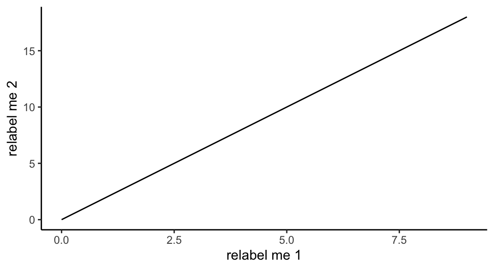
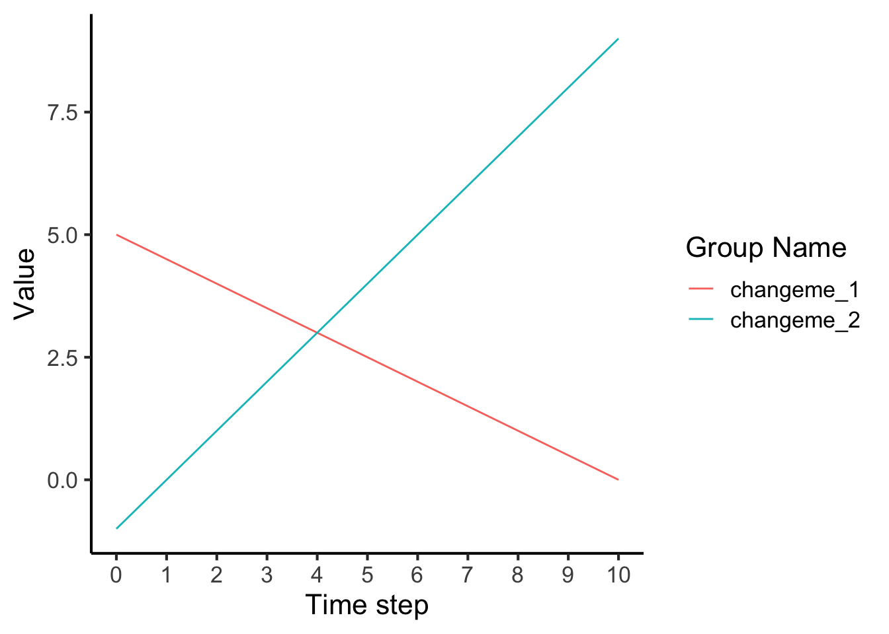
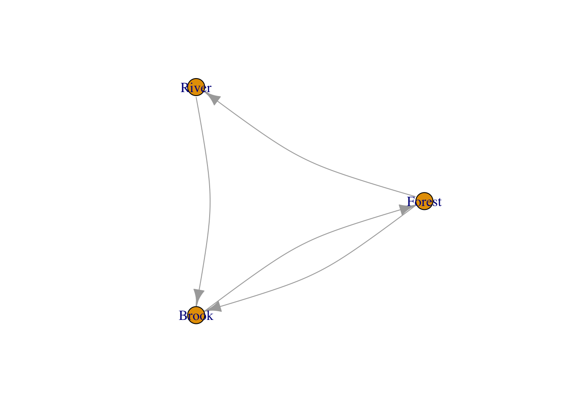
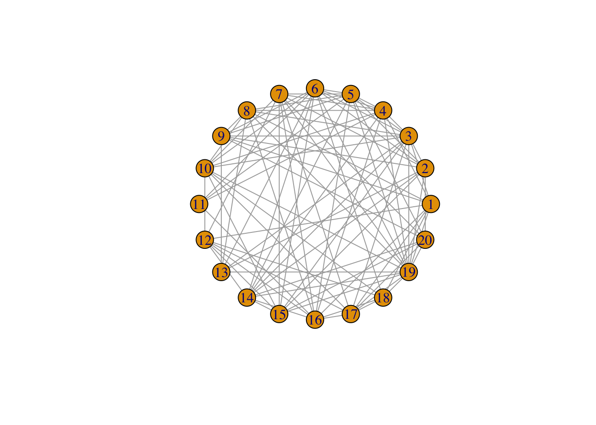
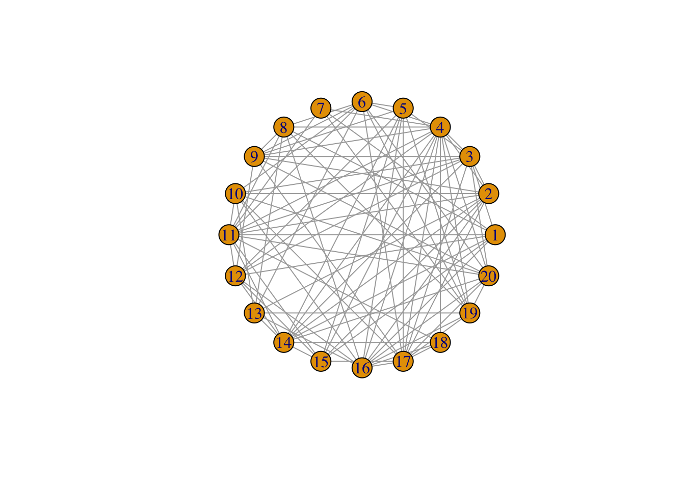

library(ggplot2)
library(tibble)
hello_world_plot <- function(n_steps = 10, start_t = 0, dt = 1, a = -1) {
# Local function that is only available in hello_world_plot.
y <- function(t, a = 2) {
a * t
}
# Create time step sequence given parameters passed to this function.
t <- seq(from=start_t, by=dt, length.out=n_steps)
# Create fake data table (i.e., a "tibble" from the tibble library).
fake_data <- tibble(y = y(t), t = t)
# Plot the fake data.
ggplot(fake_data, aes(x=t, y=y)) +
geom_line() +
xlab("relabel me 1") +
ylab("relabel me 2") +
theme_classic()
}Problem set 1, problems 2 - 5 worth 8 points total
1 Hello, world! (2 points)
When starting in any new language, it is a helpful tradition to write some form of “Hello, world!” In this particular problem, you will modify a function that plots a simple linear “time series” so that the plot has “Hello” on the x-axis, “World” on the y-axis, and so that the user can provide an arbitrary slope for the line.
1.1 Hello, world! in R (1 point)
Below is the function hello_world_plot that we will use and you will edit. Edit the following function so that 1. The slope in the plotted line is -1 and not 2 without writing “-1” in the function body. 2. The y-axis label is “Hello, World!” 3. The x-axis label is “time step”
We can run the default hello_world_plot as follows.
hello_world_plot()
1.2 Hello and World groups (1 point)
For this problem, modify the following function so that the group names in the legend titled “Group Name” are “Hello” and “World” using only the keyword variables grp_name_1 and grp_name_2 and not re-writing the strings “Hello” and “World”.
hello_world_grouped <- function(grp_name_1 = "Hello", grp_name_2 = "World", intercept_1 = 5, slope_1 = -0.5, intercept_2 = -1, slope_2 = 1) {
t_single <- rep(seq(from=0, to=10, by=1))
t <- rep(t_single, 2)
val <- c(intercept_1 + (slope_1 * t_single),
intercept_2 + (slope_2 * t_single))
# print(length(t))
# print(length(val))
fake_data_2 <-
tibble(
grp = c(rep("changeme_1", 11), rep("changeme_2", 11)),
t = t,
val = val
)
ggplot(fake_data_2, aes(x=t, y=val, color=grp)) +
geom_line() +
scale_x_continuous(breaks = 0:10) +
guides(color = guide_legend(title = "Group Name")) +
xlab("Time step") +
ylab("Value") +
theme_classic(base_size = 16)
# print(fake_data_2)
}
hello_world_grouped()2 Fun with networks (2 points)
2.1 Directional information in simple networks (1 point)
Below I demonstrate how to make a social influence triangle and square. Follow the pattern shown in making the triangle and square to make a social influence pentagon and hexagon.
Here is the triangle:
Attaching package: 'igraph'The following object is masked from 'package:tibble':
as_data_frameThe following objects are masked from 'package:stats':
decompose, spectrumThe following object is masked from 'package:base':
unionsocnet <- make_graph(~ Forest-+River-+Brook++Forest)
plot(socnet, layout = layout_in_circle(socnet), edge.curved=0.2)
Let’s add another node called Marcus to make a square:
library(igraph)
socnet <- make_graph(~ Forest-+River-+Marcus-+Brook++Forest)
plot(socnet, layout = layout_in_circle(socnet), edge.curved=0.2)
Specifically, follow the instructions below in 2.1.1 and 2.1.2.
2.2 Random networks (1 point)
We will consider social transmission in networks drawn from random graph distributions and using other randomized construction methods. We will also sometimes use undirected graphs, with no arrowhead, to mean the same thing as bidirectional influence, as Forest and Brook were in the example above. The Erdős-Rényi random graph model creates a graph with \(n\) nodes, each with a probability \(p\) of having an undirected edge between them.
We can create a random graph using the Erdős-Rényi model with the sample_gnp function in igraph. It is called sample_gnp because of the common notation \(G(n,p)\) for the family of Erdős-Rényi random graphs. Here is how to generate a \(G(n,p)\) graph with 20 nodes and a 50% chance of an edge existing between each node:
library(igraph)
net <- sample_gnp(n=20, p=0.5)
plot(net, layout = layout_in_circle(net))
2.2.1 Programming prompt (0.5 points)
Create and plot four different Erdős-Rényi graphs with four different values of p, two greater than 0.5 and two less than 0.5. Paste four different code blocks below that create networks with different values of \(p\). A stub for the first one is below.
library(igraph)
# net <- ??? <= Your Code Here!
plot(net, layout = layout_in_circle(net))
2.2.2 Writing prompt (0.5 points)
To close this problem, please describe what you noticed as \(p\) changed. Specifically, answer 1. What happens if \(p\) is very close to 0? 1. Is everyone always connected to at least one other individual for any value of \(p > 0\)?
2.2.3 Student response
(DELETE THIS LINE AND WRITE YOUR RESPONSE STARTING HERE)
3 A basic DIY influencer model (2 points)
The influencer model represents the hypothetical situation where \(N\) individuals, performing a non-adaptive behavior, \(\neg A\), observe one other agent, the influencer, performing adaptive behavior \(A\). The \(\neg\) symbol is a formal logic symbol indicating “negation of” or the “complement of”. The model assumes in general that the observers adopt \(A\) with probability \(\alpha\). These abstract names can be customized for a system of interest. In the biking influencer example from class, the adaptive behavior was labeled \(B\) for biking and any other commute behavior was \(N\) for “not biking”. We use \(A\) in the code below for this Problem Set.
We will program a version of this ourselves here that is conceptually agent-based, in that each individual has an explicit representation in the model. However there are no individual, autonomous agents yet in the code. Each agent is just represented as a row in a table.
In the final problem in this final problem set, below, you will use a recursive function to ignore individuals all together and consider the mass action that occurs on average on each time step.
In Problem Set 2, we will implement the influencer model yet another, more general way, that we can follow for developing more complicated models. For now, let’s see how we can program the influencer model in a relatively simple way.
Attaching package: 'purrr'The following objects are masked from 'package:igraph':
compose, simplify
Attaching package: 'dplyr'The following objects are masked from 'package:igraph':
as_data_frame, groups, unionThe following objects are masked from 'package:stats':
filter, lagThe following objects are masked from 'package:base':
intersect, setdiff, setequal, unionrun_influencer_model <- function(N=5, adopt_rate = 0.2, t_max = 1000) {
# Initialize influenced individuals' traits, time step, and ids.
prev_adopted_A <- rep(FALSE, N)
tbl_ret <- tibble(agent_id = 1:N,
step = rep(0, N),
adopted_A = prev_adopted_A
)
# Initialize fixated to be FALSE, since at t=0 no influenced agents have adopted A
fixated <- FALSE
t <- 1
while (!fixated || (t > t_max)) {
# Probabilistically update adopted_A to be TRUE with probability adopt_rate (α)
new_adopted_A <-
prev_adopted_A %>%
map_vec(\(adopted) { ifelse(adopted, TRUE, runif(1) < adopt_rate) })
prev_adopted_A <- new_adopted_A
# The influenced have fixated if all have adopted A
fixated <- all(new_adopted_A)
print(new_adopted_A)
print(fixated)
new_tstep <- tibble(agent_id = 1:N,
step = rep(t, N),
adopted_A = new_adopted_A)
tbl_ret <- rbind(tbl_ret, new_tstep)
t <- t + 1
}
return (tbl_ret)
}
# Set up and run influencer model for N = 5.
N <- 5
adopt_rate <- 0.1
tbl_out_5 <- run_influencer_model(N, adopt_rate)[1] FALSE FALSE FALSE FALSE FALSE
[1] FALSE
[1] FALSE FALSE TRUE FALSE FALSE
[1] FALSE
[1] TRUE FALSE TRUE FALSE FALSE
[1] FALSE
[1] TRUE FALSE TRUE FALSE FALSE
[1] FALSE
[1] TRUE FALSE TRUE FALSE FALSE
[1] FALSE
[1] TRUE FALSE TRUE FALSE FALSE
[1] FALSE
[1] TRUE FALSE TRUE FALSE FALSE
[1] FALSE
[1] TRUE FALSE TRUE FALSE FALSE
[1] FALSE
[1] TRUE FALSE TRUE FALSE FALSE
[1] FALSE
[1] TRUE TRUE TRUE FALSE FALSE
[1] FALSE
[1] TRUE TRUE TRUE FALSE FALSE
[1] FALSE
[1] TRUE TRUE TRUE FALSE TRUE
[1] FALSE
[1] TRUE TRUE TRUE FALSE TRUE
[1] FALSE
[1] TRUE TRUE TRUE FALSE TRUE
[1] FALSE
[1] TRUE TRUE TRUE TRUE TRUE
[1] TRUE# Plot counts over time using group_by and summarise functions.3.1 How does the number of influenced agents, \(N\), change the time to fixation?
Problem: Answer this question by selecting three different \(N\) values and explaining your observations (2 points).
Solution: Write R code below followed by up to one paragraph explaining your observations.
4 Recursive Influencer model (2 points)
The recursive influencer model has the following form:
\[ A_{t+1} = A_{t} + \alpha(N - A_{t}) \]
Use the tools provided in this Problem Set to create a function that takes three arguments, \(N\), \(\alpha\), and \(T\), where \(T\) is the number of time steps to run.
4.1 How does increasing \(\alpha\) affect \(T\)?
Problem: Answer this question by selecting four different \(\alpha\), creating time series of counts of how many individuals are doing \(A\) at each time step.
Solution: Write R code below followed by up to one paragraph explaining your observations.
2.1.1 Social influence pentagon
Build the pentagon by adding one name you choose to the four already chosen in the
make_graphfunction call. Follow the pattern from the triangle to the square.